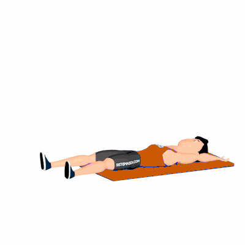

Abdominal Remador Unilateral

Exercício para fortalecimento do abdome com ênfase na contração do reto abdominal e ativação dos oblíquos devido ao movimento unilateral. Indicado para praticantes de musculação em todos os níveis.
Ficha Técnica
Tipo: Funcional
Grupo Muscular: Abdome
Aparelho: Nenhum
Músculos: Nenhum
Como realizar
- Deite-se de costas no colchonete com braços e pernas estendidos;
- Inspire e eleve simultaneamente o tronco e uma das pernas, aproximando o braço oposto em direção ao pé;
- Contraia o abdome durante a subida, mantendo o movimento controlado;
- Retorne lentamente à posição inicial;
- Repita o movimento alternando os lados conforme a prescrição.
 RC STORE
RC STORE